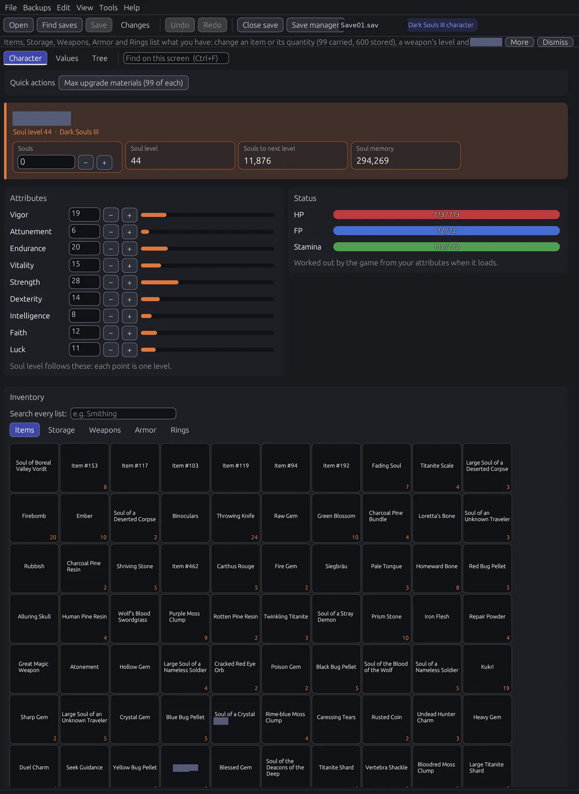

Editor de saves de Dark Souls III
Edite seu save de Dark Souls III no seu próprio PC com o Universal Save Editor, um editor e gerenciador de saves gratuito e offline para 590+ (593) jogos. Faça backups, restaure e comece novas partidas na mesma janela. Nada é enviado e não há limites.
Versão 0.9.3: Windows (64-bit) · Windows on ARM · Linux (64-bit) · Linux on ARM · macOS
Todas as versões e notas de versão
O que você pode editar
- Name, class and level
- Currency
- Attribute bars (level follows)
- HP / FP / Stamina meters
- Runes or souls to the next level (Elden Ring, Dark Souls III and I)
- Inventory grids (with a search box across every list) for items, key items, storage, weapons (level and affinity / infusion), armor and talismans / rings
- A Max upgrade materials button (Elden Ring: every Smithing Stone, Somber Smithing Stone and Glovewort to 999; Dark Souls: every titanite to 99)
- Elden Ring also has a Max crafting materials button that fills the cookbook materials you carry or store (meat, bones, flowers, mushrooms, butterflies, stones…) to 999, leaving key items alone
O editor mostra esses nomes de valores em inglês.

Onde Dark Souls III guarda os saves
Pasta: %APPDATA%\DarkSoulsIII\<Steam id>
Arquivos: DS30000.sl2
Você não precisa procurar sozinho: no editor, escolha Encontrar os saves do meu jogo, selecione Dark Souls III e ele lista os saves que encontrar. (A versão para navegador não consegue vasculhar suas pastas: abra você mesmo o arquivo desta pasta.)
Como editar seu save de Dark Souls III
- Baixe o Universal Save Editor para Windows, macOS ou Linux e é só executar. Prefere não instalar nada? Use-o no navegador: ele também roda no seu computador, e ao salvar o arquivo editado é baixado (o Chrome e o Edge podem salvar no mesmo arquivo).
- Feche o jogo para que ele não sobrescreva suas alterações.
- Escolha Encontrar os saves do meu jogo, selecione Dark Souls III e abra seu save (ou arraste o arquivo de save para a janela).
- Altere o que quiser e depois escolha Salvar. O editor confere o arquivo novo e faz antes um backup do antigo.
Perguntas sobre os saves de Dark Souls III
Onde fica o arquivo de save de Dark Souls III?
Normalmente em %APPDATA%\DarkSoulsIII\<Steam id>, em arquivos chamados DS30000.sl2. O editor baixado encontra para você: escolha Encontrar os saves do meu jogo e selecione Dark Souls III.
Dark Souls III ainda vai carregar um save editado?
O editor grava o save de volta no mesmo formato que o jogo usa e lê o arquivo novo de volta para conferir antes de substituir qualquer coisa. O original recebe um backup antes; se algo parecer errado no jogo, restaure-o em Backups.
Posso editar saves de Dark Souls III no Steam Deck ou no Linux?
Sim. Há uma versão para Linux, e Encontrar os saves do meu jogo também procura dentro dos prefixos do Proton e do Wine, onde o Steam Play guarda os saves de jogos de Windows.
Posso editar meu save de Dark Souls III no navegador?
Sim. A versão para navegador roda no seu próprio computador e nunca envia o save. Abra o arquivo você mesmo e guarde uma cópia, porque ao salvar o arquivo editado é baixado em vez de fazer um backup do antigo. No Chrome e no Edge, ela também pode salvar no mesmo arquivo, guardando antes o original no navegador.
É seguro usar no jogo online?
Saves editados são para jogar sozinho. Não os use em modos online ou multijogador, onde podem violar regras ou fazer sua conta ser sinalizada.
Custa alguma coisa?
Não. É gratuito e sempre será: sem anúncios, sem conta e sem limites. O código é aberto, sob a GPL-3.0.
Funcionou no seu jogo?
Testou uma edição em Dark Souls III? Conte-nos se funcionou. Leva um minuto, e nenhum save é enviado.
Por que usar
- Grátis para sempre. Sem preço, sem anúncios, sem conta, sem plano pago.
- Offline. Seu save nunca sai do seu computador: nada é enviado, então não há limite de tamanho de arquivo, filas nem limites de uso.
- Seguro. Cada save é conferido por releitura antes de ser gravado, e o arquivo antigo recebe um backup primeiro (Backups › Abrir o gerenciador de saves).
- Funciona em jogos que ele não conhece. A busca de valores encontra um número que você sabe, ou um que você não sabe (uma barra de vida, um contador oculto): escaneie, jogue, salve e fique com o que aumentou, diminuiu, mudou ou ficou igual.
- Linux e Steam Deck. Encontrar os saves do meu jogo também procura dentro dos prefixos do Proton e do Wine, onde os jogos de Windows executados pelo Steam Play guardam seus saves.
- No seu idioma. Menus e mensagens em inglês, alemão, espanhol, francês, italiano, polonês, turco, russo, português do Brasil, japonês, coreano, chinês simplificado e chinês tradicional, de acordo com o idioma do sistema.
- Gerenciador de saves (botão da barra de ferramentas). Backups automáticos e com nome guardados em uma pasta ao lado de cada save, onde nenhum jogo os carrega. Restaure qualquer backup (o save atual recebe um backup antes), compare-o, ou faça um backup e comece um jogo novo em um jogo de save único e restaure o antigo depois. Cada backup é gravado no disco e conferido antes de substituir qualquer coisa.
- Código aberto. Qualquer pessoa pode ler o código (GPL-3.0).
Saves editados são para jogar sozinho. Não os use em modos online ou multijogador.
Mais editores de saves
- Sekiro: Shadows Die TwiceTela do jogo
- HadesTela do jogo
- Hollow KnightTela do jogo
- Terraria characterTela do jogo
- MinecraftTela do jogo
- Red Dead Redemption 2Tela do jogo
Esta página em inglês · Ver todos os 593 jogos compatíveis (em inglês)